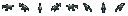
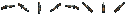
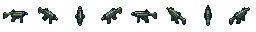
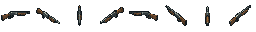
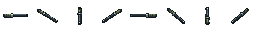

Subfusil · Escopeta · Porra
Propuesta visual r1 · Tres modelos existentes, ocho direcciones y dos resoluciones. Apariencia aprobada el25/10/2026.
La versión16 simplifica la forma; la32 añade detalle. Las láminas se amplían con píxeles nítidos para compararlas. No cambian estadísticas, tiers ni fusiones.
Modelos 16×16
Ver hojas nativas 16


Modelos 32×32
Ver hojas nativas 32


